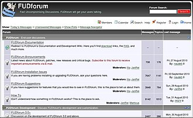

About Online Forums

Niche interests can often feel isolating when nobody around you shares them. However in the age of the internet finding like-minded people is easier than ever before when exploring the world of forums. A view into these communities is seen through their website domains and subdomains where rich cultures are hidden away in corners of the internet there for those looking for connection. RetroAchievements is one such forum focused on fan-created achievements for retro video games.